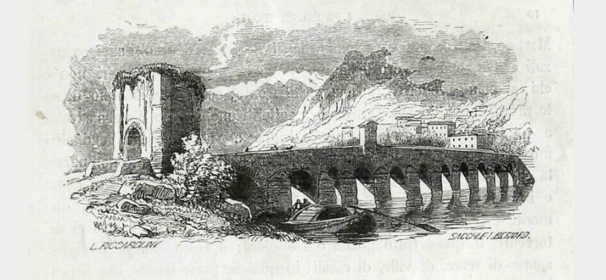
Luoghi
Qui puoi esplorare in dettaglio i principali luoghi nei quali si svolgono gli eventi del romanzo.
Manzoni ambienta la storia sia in luoghi reali, come Milano e Monza, sia in luoghi inventati, ma situati vicino a città e paesi reali; per esempio, il villaggio da cui provengono i protagonisti.
Di seguito trovi le immagini (illustrazioni di Francesco Gonin presenti nella Quarantana) e le descrizioni approfondite dei luoghi menzionati nei primi undici capitoli de I promessi sposi.
Alla fine di ogni descrizione sono presenti due tipi di pulsanti:
- I pulsanti verdi con la dicitura “Continua a leggere” svelano la descrizione completa di ogni luogo e i pulsanti verdi “Indietro” la nascondono.
- I pulsanti azzurri con la dicitura “Capitolo n” indicano il capitolo che è principalmente ambientato in quel luogo. Cliccandoli, puoi leggere l’intero testo del capitolo direttamente sul sito Leggo Manzoni.
- I pulsanti gialli con la dicitura “Guarda la mappa” collegano il luogo alla sua posizione esatta sulla mappa interattiva Manzoni Storytelling.
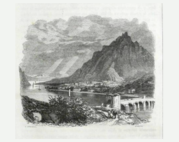
Lago di Como
Il Lago di Como apre il romanzo con il suo suggestivo ramo meridionale, incorniciato da due catene montuose e punteggiato di insenature e promontori. Nei pressi di Lecco, le acque si restringono come un fiume sotto un ponte, trasformando il paesaggio naturale in una soglia simbolica tra pace e pericolo. Questo scenario stabilisce fin dall’inizio il tono realistico e poetico della narrazione. Più avanti, il lago diventa una via di fuga: da Pescarenico, Renzo, Lucia e Agnese seguono il piano di fra Cristoforo e prendono il largo su una barca. L’attraversamento del lago rappresenta così sia un salvataggio concreto, sia un passaggio simbolico verso la sicurezza e la speranza.
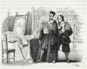
Lecco
Lecco sorge sulle rive del Lago di Como, ai piedi delle montagne, arrivando talvolta a toccare l’acqua quando il livello del lago si alza. All’epoca della vicenda è un borgo fortificato con una guarnigione spagnola, simbolo del dominio straniero e delle sofferenze locali. Le strade tortuose offrono scorci mutevoli di cime e di acqua, riflettendo la bellezza aspra della Lombardia. Determinata a salvare il matrimonio, Agnese manda Renzo a Lecco per chiedere aiuto all’avvocato dottor Azzecca-garbugli. Ma la visita rivela subito la corruzione della legge: accolto inizialmente come un presunto amico dei potenti, Renzo viene scacciato con disprezzo non appena scoprono che è invece la loro vittima.
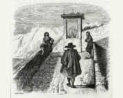
Il villaggio
Il villaggio, situato sul ramo sud-orientale del Lago di Como e nei pressi di Lecco, nel territorio lecchese, offre un tranquillo ambiente rurale. Don Abbondio, il parroco, passeggia serenamente recitando il breviario. Il sentiero forma una curva che si apre in un bivio: un ramo sale verso la canonica, l’altro scende fino a un ruscello. Una piccola cappelletta votiva raffigura le anime del Purgatorio, familiare simbolo della devozione contadina. In questo scenario pacifico emergono chiaramente la semplicità della vita del villaggio e la sua atmosfera religiosa. Ma la quiete si spezza all’improvviso quando Don Abbondio nota due uomini in attesa al bivio, trasformando il placido sentiero di campagna in un luogo di tensione e paura.
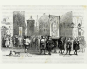
Milano
Milano, cuore della Lombardia sotto il dominio spagnolo, incarna il mondo dell’autorità, del privilegio e della corruzione. Dietro i palazzi imponenti e il potere politico si nasconde una città segnata da carestia, ingiustizia e dal controllo violento dei bravi. Qui i governatori emanano senza tregua gride, proclami severi che nessuno rispetta, rivelando un governo forte solo in apparenza ma impotente nella realtà. Milano diventa così il simbolo del degrado morale, dove la legge crolla e il popolo soffre. È verso questa città, emblema insieme di potere e corruzione, che Renzo è infine destinato a dirigersi.
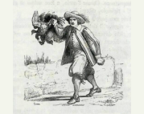
Pescarenico
Lucia è la prima che raggiunge il convento di Padre Cristoforo a Pescarenico, piccolo villaggio situato sulla riva sinistra dell’Adda, vicino al ponte e alla strada che conduce da Lecco a Bergamo. Il paese, con le sue case di pescatori e le reti stese ad asciugare, offre un ambiente sereno e pittoresco. Lucia confida a Padre Cristoforo che Don Rodrigo l’ha importunata vicino al filatoio, arrivando persino a scommettere di poterla conquistare. Sconvolta, segue il consiglio del frate: restare in casa, pregare e affrettare le nozze per evitare nuovi pericoli. Lucia racconta questo episodio spaventoso anche a Renzo e ad Agnese, e Padre Cristoforo li accoglie offrendo protezione, guida e conforto nel tranquillo scenario del villaggio.
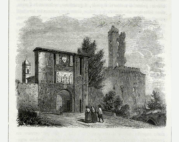
Monza
A Monza, Lucia e Agnese trovano rifugio dopo essere fuggite dalle minacce di Don Rodrigo. Guidate al convento delle Cappuccine, incontrano una giovane monaca nobile, la cui autorità e influenza assicurano loro protezione. Nel parlatorio, la monaca interroga Lucia con una curiosità insolita, quasi deridendo le sue paure, lasciandola inquieta. Tuttavia, concede alle due donne una stanza sicura all’interno del monastero, dove sono trattate con rispetto e discrezione. Monza diventa così un santuario temporaneo, mentre la narrazione si prepara a tornare su Don Rodrigo e sui suoi piani frustrati.
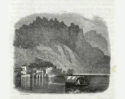
Fiume Adda
Il fiume Adda, nel punto in cui il Lago di Como si restringe in un corso d’acqua, fa da sfondo alla fuga di Renzo e Lucia. Sulla sua riva sinistra si trova Pescarenico, piccolo villaggio di pescatori con le reti stese e i pendii autunnali delle montagne. Il vicino convento di Padre Cristoforo offre rifugio e guida. Da queste sponde i fuggitivi attraversano il Bione in barca e proseguono il loro cammino verso la salvezza. Il fiume e il suo paesaggio uniscono bellezza naturale e tensione narrativa, diventando simbolo di fiducia, pazienza e protezione divina.
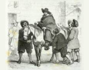
Gorgonzola
Gorgonzola è un paese di passaggio, poco lontano da Milano, dove Renzo arriva nel tardo pomeriggio durante la fuga. È un luogo di sosta lungo la strada verso Bergamo, con un’osteria frequentata da gente del posto e da viaggiatori. Qui Renzo cerca informazioni senza destare sospetti, usando il nome del paese come copertura per nascondere la sua vera meta. L’atmosfera è carica di curiosità e di voci sulle sommosse di Milano, che arrivano fin lì deformate dai racconti, rendendo il luogo insicuro e spingendo Renzo a ripartire in fretta.
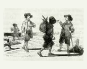
Venezia
Venezia, città d’acqua e di ponti, è il centro del commercio e della vita mercantile del Nord Italia. I canali luccicano sotto il sole e le gondole scivolano tra palazzi alti e logge ornate, mentre il rumore dei remi si mescola ai richiami dei mercanti. La città rappresenta potere, ricchezza e ingegno umano, ma anche insidie e leggi severe: è qui che si decide il destino di chi cerca aiuto o protezione, tra dogi, senatori e mercanti. Per Renzo, Venezia appare come una tappa obbligata di traffici e interventi istituzionali, lontana dal calore familiare ma necessaria per la provvidenza e la giustizia.
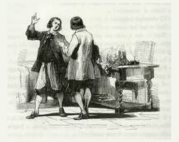
Bergamo
Bergamo, vista dall’altra riva dell’Adda, emerge tra le colline con la sua gran macchia biancastra e i borghi sparsi. Le case e le torri si affacciano su pianure coltivate e sentieri che conducono alla città alta. Per Renzo, Bergamo rappresenta rifugio e speranza: una terra di lavoro, familiarità e sicurezza dopo la fuga da Milano. Le strade affollate, i filatoi e le botteghe raccontano la vita laboriosa dei bergamaschi, e la città diventa simbolo di ospitalità, provvidenza e rinascita, in contrasto con le ansie e i pericoli della città di partenza.
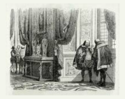
Madrid
Madrid, capitale della Spagna, si stende maestosa tra ampi viali e piazze rumorose, dove il ritmo della città e l’autorità del potere si percepiscono in ogni angolo. Il palazzo reale e le corti antiche dominano dall’alto, mentre mercati, taverne e strade affollate testimoniano la vita quotidiana dei cittadini. Per Attilio, che vi arriva per una missione diplomatica, Madrid rappresenta un crocevia di formalità, influenza e prestigio: ogni incontro col Consiglio segreto o con dignitari della corte richiede prudenza, osservazione e calcolo. La città è simbolo di potere istituzionale e intrighi, un luogo in cui si decide il destino delle persone con un gesto, una parola o una lettera, e dove il filo tra fortuna e pericolo è sottilissimo.
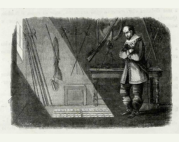
Castello dell'Innominato
Il castello, arroccato su un’altura solitaria tra le valli lecchesi, domina il paesaggio circostante con la sua struttura imponente e isolata. La posizione elevata, lontana dai centri abitati, gli conferisce un’aria minacciosa e maestosa, immersa in un ambiente selvaggio e poco accessibile, che accentua la sensazione di mistero e potere che vi aleggia.
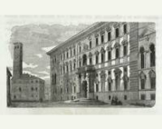
Pavia
Pavia, città lombarda attraversata dal Ticino, appare come un centro di studio e di formazione religiosa. È un luogo ordinato e raccolto, sede di collegi e istituzioni ecclesiastiche, dove prevalgono la riflessione, la disciplina e l’impegno intellettuale. Qui Federigo Borromeo compie parte della sua formazione giovanile, in un ambiente che favorisce la cultura, la carità e il senso del dovere, lontano dalle violenze e dalle tensioni che segnano altri luoghi della vicenda.
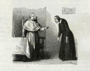
Palazzo del Cardinal Federigo Borromeo
Il palazzo del cardinal Federigo, situato nel cuore di Milano, appare maestoso e raccolto, con un portone ampio che conduce a cortili luminosi e stanze ornate con sobria eleganza. L’interno offre un ambiente solenne e tranquillo, dove la luce filtra dalle alte finestre, creando angoli di riflessione e di quiete, adatti a studi e conversazioni profonde. Qui si respira un’atmosfera di ordine e di disciplina, accompagnata da una gentilezza naturale che invita al rispetto e alla fiducia.